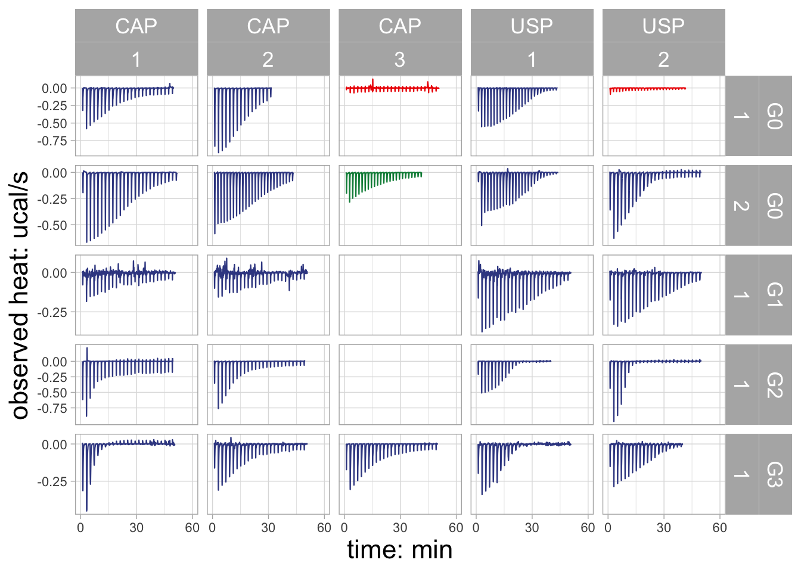
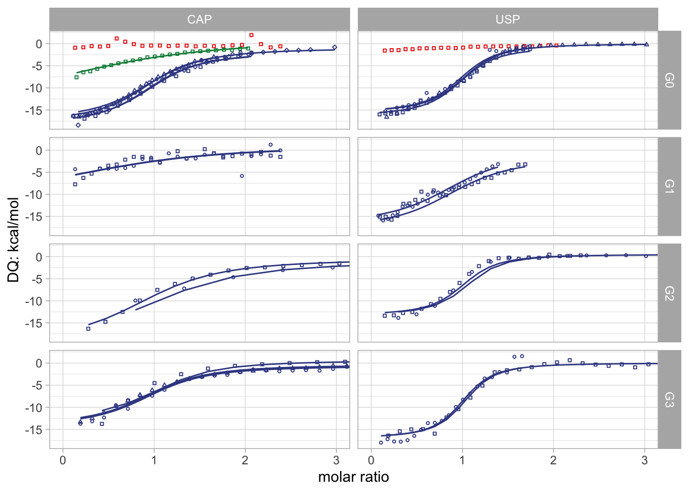
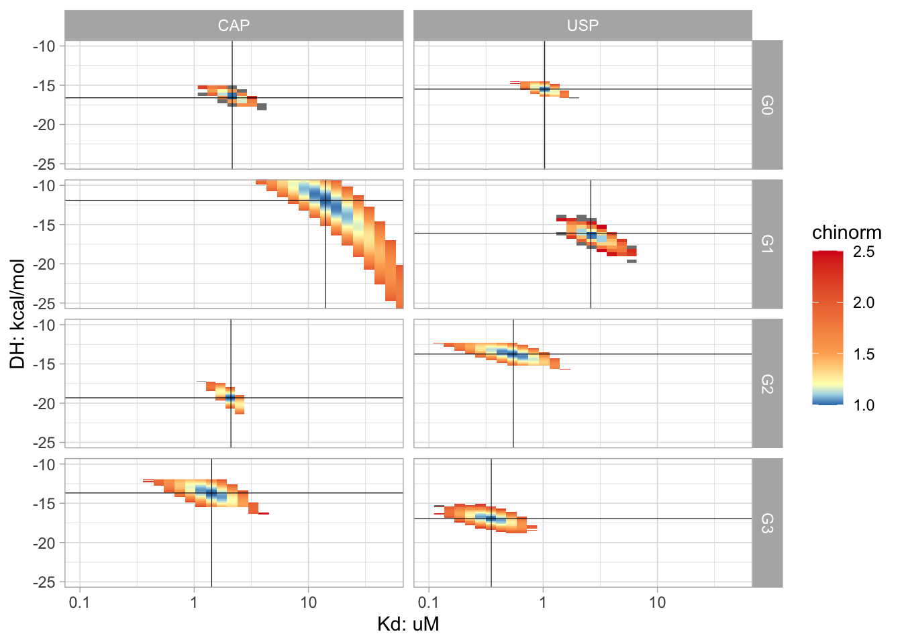
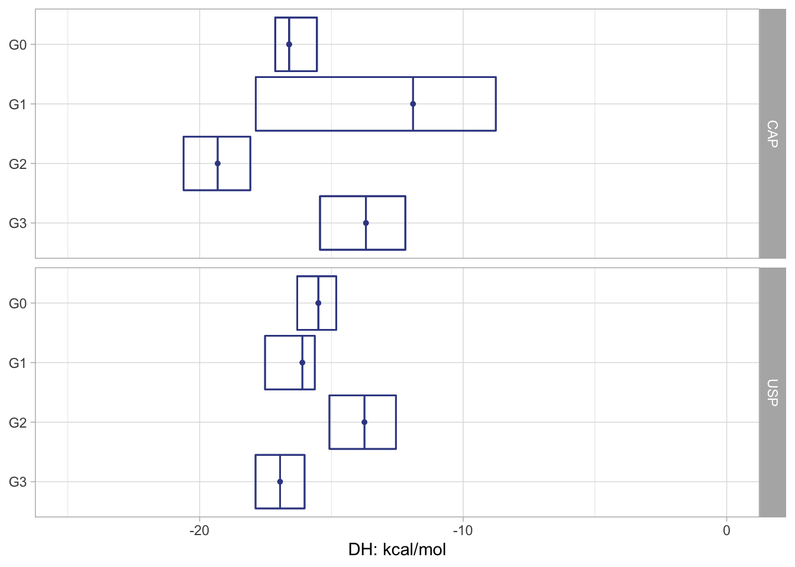
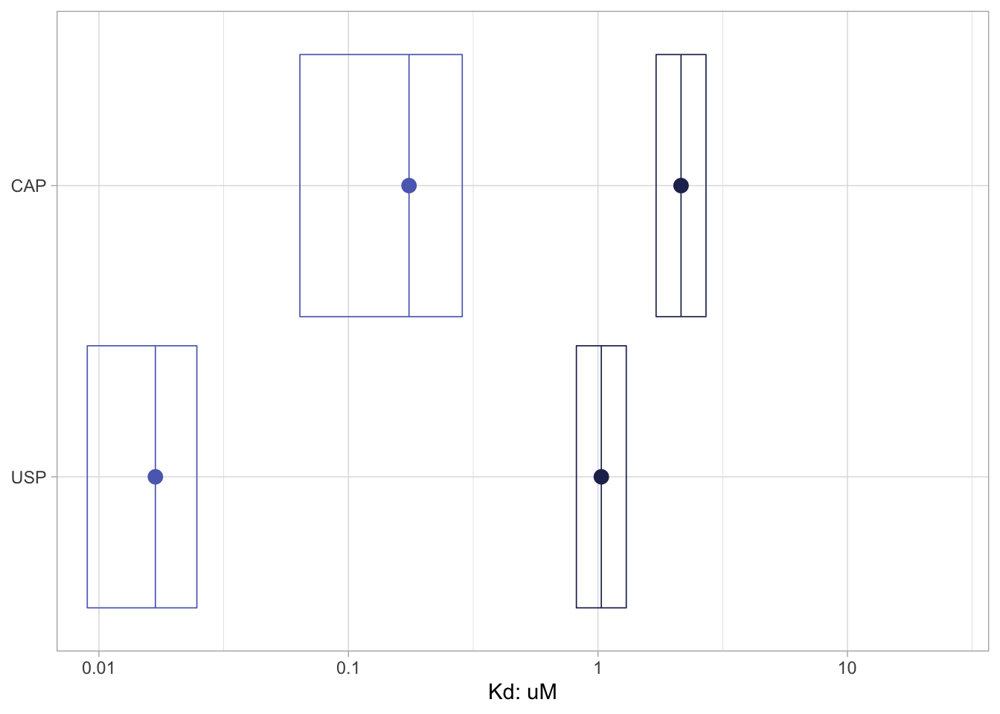
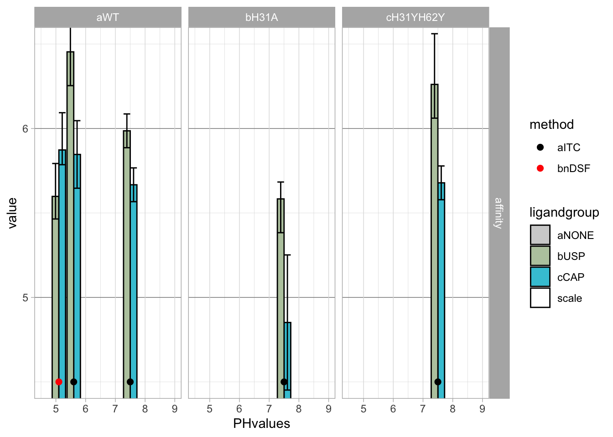

ITC data of G3BP1-NTF2 binding to Caprin-1 and USP10
1 Info about ITC analysis script
ITC data deposited as Suppplemental data on DRYAD. Data were analyzed using NITPIC and SEDPHAT.
2 Load libraries
library(ggplot2)
library(tidyverse)
library(plyr)
library(tidyr)
library(stringr)
library(ggforce)
library(readr)
library(ggsci)
library(knitr)
library(bookdown)
library(tinytex)
library(kableExtra)
library(DT)
library(xfun)
library(readxl)
library(vroom)
library(metR)
library(reshape2)
library(misc3d)
library(ggforce)
library(RColorBrewer)
library(ggpubr)
library(bsts)
library(prospectr)
library(ggridges)
library(svglite)3 Visualization of ITC data
The nitpic-processed data were saved and opened in Sedphat for global fitting. The fitted data were saved using the option “copy all data and save as new config” as well as by copying the data and data fit tables into Excel sheets. Two-dimensional error-surface projections and covariance matrices were saved as text files.
3.1 Import the data
Import ITC data in Folder /data_itc
nitpiclist_itc = list.files(path = "./data_itc", pattern = "*", recursive = TRUE, include.dirs = TRUE, full.names = TRUE)
nitpiclist_itc.tib <- as_tibble(nitpiclist_itc)
nitpiclist_itc.all <- nitpiclist_itc.tib %>% dplyr::mutate(., datatype = str_extract(value, "Covariance|dHvsKab|xls|data.txt|error.txt|fit.txt|\\.nitpic|error-dat|confidence|(.xp)$")) %>% drop_na(datatype) %>% dplyr::mutate(., datatype_corr = str_extract(datatype, "Covariance|dHvsKab|xls|nitpic|error-dat|data.txt|error.txt|fit.txt|confidence|xp")) %>% dplyr::select(., -datatype) %>% separate(., value, into = c("toptopfolger", "topfolder", "sedfolder", "subfolder", "dataname"), sep = "/", remove = FALSE) %>% dplyr::mutate(., detect_sym = str_detect(subfolder, "(^[:symbol:])|^[:punct:]")) %>% dplyr::mutate(., deleteme = case_when(datatype_corr =="xp" & detect_sym == "TRUE" ~ "TRUE", TRUE ~ "FALSE")) %>% dplyr::filter(., deleteme != "TRUE") %>% dplyr::select(., !c("toptopfolger", "topfolder", "sedfolder"))
vroom_pipe_f <- function(grepvalue, colnames){
out <- vroom(pipe(grepvalue), col_names = colnames)
return(out)
}
vroom_pipe_basic_f <- function(grepvalue){
out <- vroom(pipe(grepvalue), delim="\t")
return(out)
}
addinjectionnumbers_f <- function(df1, df2){
df1_out <- df1 %>% dplyr::mutate(., id = rep(c(1,2), length.out = length(heat))) %>% dplyr::select(., -heat) %>% dplyr::filter(., id < 2) %>% dplyr::mutate(., injnumber = row_number()) %>% dplyr::select(., -id)
df_out <- df2 %>% left_join(., df1_out) %>% fill(., injnumber, .direction = c("down"))
return(df_out)
}
filter_time_f <- function(df_data, df_time){
df_data_out <- df_data %>% dplyr::filter(., time < df_time)
}
change_nitpic_dH_f <- function(df){
df_out <- df %>% drop_na(., NDH) %>% mutate_if(., is.character, as.numeric)
return(df_out)
}
extract_itcconcentrations_f <- function(df){
df_out <- df %>% dplyr::summarize(., Vx = sum(INVJ), Xt = last(Xt), Mi = first(Mt), Mt = last(Mt)) %>% dplyr::mutate(., Xi = ((Vx+200)/Vx)*Xt) %>% dplyr::select(., Mi) %>% dplyr::mutate(., Mi = Mi*1000) %>% pull()
return(df_out)
}
nitpic_itcdata.nit <- nitpiclist_itc.all %>% dplyr::filter(., datatype_corr == "nitpic") %>% dplyr::mutate(., nitpic = str_detect(dataname, "\\.nitpic")) %>% dplyr::filter(., nitpic == "TRUE") %>% separate(., dataname, into = c("ntf2_type", "PH", "ligand", "lig_type", "datasetid", "cconc", "sconc"), sep = "_", remove = FALSE) %>% dplyr::select(-cconc, -sconc) %>% dplyr::mutate(., grepvalue = paste("grep -A 10000 CORRECTED ", value, "| grep -v INJECTION | grep -v CORRECT", sep = ""), injections = paste("grep -A 10000 CORRECTED ", value, " | grep -A 1 -B 1 INJECTION | grep -v INJECTION | grep [[:digit:]]", sep = ""), colnames = list(c("time", "heat"))) %>% dplyr::mutate(., data = purrr::pmap(list(grepvalue, colnames),vroom_pipe_f), injectionslist = purrr::pmap(list(injections, colnames),vroom_pipe_f))
nitpic_itcdata_cellconc.nit <- nitpic_itcdata.nit %>% dplyr::select(., !c("grepvalue", "injections")) %>% dplyr::mutate(., grepvalue = paste("grep -A 30 DH ", value, " | grep -B 30 BEGIN", sep = "")) %>% dplyr::mutate(., data_nitfit_temp = purrr::pmap(list(grepvalue),vroom_pipe_basic_f)) %>% dplyr::mutate(., data_nitfit = purrr::map(data_nitfit_temp, ~change_nitpic_dH_f(.))) %>% dplyr::mutate(., nit_conc = purrr::map(data_nitfit, ~extract_itcconcentrations_f(.))) %>% dplyr::select(., dataname, nit_conc) %>% unnest(., nit_conc)
nitpic_itcdata_injections.nit <- nitpic_itcdata.nit %>% dplyr::select(., !c("subfolder", "datatype_corr", "nitpic")) %>% dplyr::mutate(., injectionslistid = purrr::pmap(list(injectionslist, data), addinjectionnumbers_f))
##" script includes some case_when pipes to generate groups for plotting
plotgroup_tribble <- nitpic_itcdata_injections.nit %>% dplyr::mutate(., datasetid = str_extract(datasetid, "[:digit:]")) %>% dplyr::select(., ntf2_type, PH, ligand, lig_type_corr = lig_type, datasetid, data, injectionslistid) %>% dplyr::mutate(., folder = paste(ntf2_type, PH, ligand, lig_type_corr, sep = "_")) %>% dplyr::mutate(., plotgroup = case_when(ntf2_type == "NTF2WT" & lig_type_corr == "WT" & PH == "PH75" ~ "G0_MUT0", ntf2_type == "NTF2WT" & ligand == "CAP" & lig_type_corr == "L9A" & PH == "PH75" ~ "G0_MUT2",ntf2_type == "NTF2WT" & ligand == "CAP" & lig_type_corr == "F3AL9A" & PH == "PH75" ~ "G0_MUT1",ntf2_type == "NTF2WT" & ligand == "USP" & lig_type_corr == "F3AF6A" & PH == "PH75" ~ "G0_MUT1",ntf2_type == "H31A" & lig_type_corr == "WT" & PH == "PH75" ~ "G1_MUT0", ntf2_type == "NTF2YY" & lig_type_corr == "WT" & PH == "PH75" ~ "G2_MUT0", ntf2_type == "NTF2WT" & PH == "PH56" ~ "G3_MUT0")) %>% separate(., plotgroup, into = c("plotgroup1", "plotgroup2"), sep = "_", remove = FALSE) %>% dplyr::mutate(., datasetidname = paste(folder, datasetid, sep = "_")) %>% dplyr::mutate(., datasetid = as.integer(datasetid))
nitpic_itcdata_nit_mod.tib <- nitpic_itcdata_injections.nit %>% dplyr::mutate(., datasetid = str_extract(datasetid, "[:digit:]")) %>% dplyr::mutate(., datasetid = as.integer(datasetid)) %>% dplyr::select(., dataname, ntf2_type, PH, ligand, lig_type_corr = lig_type, datasetid, data, injectionslistid) %>% dplyr::mutate(., folder = paste(ntf2_type, PH, ligand, lig_type_corr, sep = "_")) %>% left_join(., plotgroup_tribble) %>% dplyr::mutate(., filtertime = case_when(datasetidname == "NTF2WT_PH56_USP_WT_2" ~ 2400, TRUE ~ 3600)) %>% dplyr::mutate(., data_filtered = purrr::pmap(list(data, filtertime), filter_time_f))
nitpic_itcdata_confvalues.tib <- nitpiclist_itc.all %>% dplyr::filter(., datatype_corr == "confidence") %>% dplyr::mutate(., data = purrr::map(value, ~vroom(., delim = " "))) %>% unnest(., data) %>% dplyr::select(., !c("value", "datatype_corr")) %>% separate(., "DATASET", into = c("folder", "dropme"), sep = "\\.") %>% dplyr::select(., !c("dropme")) %>% separate(., folder, into = c("ntf2_type", "PH", "ligand", "lig_type_corr"), sep = "_", remove = FALSE) %>% dplyr::mutate(., KD = 10^(-KA+9),KDmin = 10^(-KAmin+9),KDmax = 10^(-KAmax+9)) %>% dplyr::mutate(., Hsigma = (((dH-dHmin)^2+(dH-dHmax)^2)/2)^0.5, Ksigma = (((KD-KDmin)^2+(KD-KDmax)^2)/2)^0.5)
nitpic_itcdata_confvalues_sel.tib <- nitpic_itcdata_confvalues.tib %>% dplyr::select(., c("folder", "ntf2_type", "PH", "ligand", "lig_type_corr", "KD", "Ksigma", "dH", "Hsigma"))3.2 ITC thermograms
nitpic_itcdata_nit_preplot.tib <- nitpic_itcdata_nit_mod.tib %>% left_join(., nitpic_itcdata_cellconc.nit) %>% dplyr::select(., -data, -injectionslistid) %>% dplyr::group_by(., ligand, plotgroup, nit_conc) %>% dplyr::mutate(., datasetid2 = row_number(plotgroup1)) %>% unnest(., data_filtered)
nitpic_itcdata_nit_plot <- nitpic_itcdata_nit_preplot.tib %>% ggplot(aes(x = time, y = heat, group = datasetidname, colour = factor(plotgroup2))) +
#geom_line(aes(colour = factor(MLfitcorr))) +
#geom_point() +
geom_line(size=0.4) +
scale_color_aaas() +
theme_light() +
scale_x_continuous("time: min", breaks = c(0, 1800, 3600), labels = function(breaks) ((breaks/60))) +
scale_y_continuous("observed heat: ucal/s") +
#coord_cartesian(ylim = c(-0.8, 0.1)) +
theme(legend.position="none") +
facet_grid(plotgroup1+nit_conc ~ ligand+plotgroup2+datasetid2, scales = "free_y")
ggsave("./itc_nitpic_ggplot.jpeg", nitpic_itcdata_nit_plot, device = "jpeg", width = 150, height = 120, units = c("mm"))
ggsave("./itc_nitpic_ggplot.ps", nitpic_itcdata_nit_plot, device = "ps", width = 150, height = 120, units = c("mm"))
#print(nitpic_itcdata_nit_plot)theme_light_arial <- function(){
font <- "Arial"
theme_light() %+replace%
theme(text = element_text(size = rel(1.5)))
}
modify_plot_panel_order <- tribble(~ligand, ~plotgroup1, ~plotgroup2, ~datasetid2, ~nit_conc, ~panelid, ~concid,
"CAP", "G0", "MUT0", 1, 20, 1, 1,
"CAP", "G0", "MUT0", 1, 25, 1, 2,
"CAP", "G0", "MUT0", 2, 25, 2, 1,
"CAP", "G0", "MUT0", 3, 25, 2, 2,
"CAP", "G0", "MUT1", 1, 25, 1, 3,
"CAP", "G0", "MUT2", 1, 25, 2, 3,
"CAP", "G1", "MUT0", 1, 20, 1, 1,
"CAP", "G1", "MUT0", 2, 20, 1, 2,
"CAP", "G2", "MUT0", 1, 7, 1, 1,
"CAP", "G2", "MUT0", 1, 10, 1, 2,
"CAP", "G3", "MUT0", 1, 12.5, 1, 1,
"CAP", "G3", "MUT0", 2, 12.5, 1, 2,
"CAP", "G3", "MUT0", 3, 12.5, 1, 3,
"USP", "G0", "MUT0", 1, 25, 1, 1,
"USP", "G0", "MUT0", 2, 25, 2, 1,
"USP", "G0", "MUT0", 3, 25, 2, 2,
"USP", "G0", "MUT1", 1, 25, 1, 2,
"USP", "G1", "MUT0", 1, 20, 1, 1,
"USP", "G1", "MUT0", 2, 20, 1, 2,
"USP", "G2", "MUT0", 1, 15, 1, 1,
"USP", "G2", "MUT0", 2, 15, 1, 2,
"USP", "G3", "MUT0", 1, 12.5, 1, 1,
"USP", "G3", "MUT0", 2, 12.5, 1, 2)
nitpic_itcdata_nit_plot2 <- nitpic_itcdata_nit_preplot.tib %>% left_join(., modify_plot_panel_order) %>% ggplot(aes(x = time, y = heat, group = datasetidname, colour = factor(plotgroup2))) +
#geom_line(aes(colour = factor(MLfitcorr))) +
#geom_point() +
geom_line(size=0.4) +
scale_color_aaas() +
theme_light_arial() +
scale_x_continuous("time: min", breaks = c(0, 1800, 3600), labels = function(breaks) ((breaks/60))) +
scale_y_continuous("observed heat: ucal/s", breaks = c(0,-0.25, -0.5, -0.75), minor_breaks = NULL) +
coord_cartesian(xlim = c(0, 3600)) +
theme(legend.position="none", axis.text = element_text(size = rel(0.5))) +
facet_grid(plotgroup1+panelid ~ ligand+concid, scales = "free_y")
print(nitpic_itcdata_nit_plot2)
ggsave("./itc_nitpic_ggplot2.jpeg", nitpic_itcdata_nit_plot2, device = "jpeg", width = 150, height = 120, units = c("mm"))
ggsave("./itc_nitpic_ggplot2.ps", nitpic_itcdata_nit_plot2, device = "ps", width = 150, height = 120, units = c("mm"))ITC thermograms, shown as Supplementary Figure S4A in ms. G0: NTF2-WT at pH 7.4, G1: H31A at pH 7.4, G2: H31YH62Y at pH 7.4, G3: NTF2-WT at pH 5.6.Not shown in manuscript.
3.3 Global sedphat fit plots
import_sedfit_f <- function(filename){
out <- vroom(filename, col_names = c("MX", "NDH"))
return(out)
}
baseline_fix_f <- function(df){
df_out <- df %>% vroom(., col_names = c("exp", "base")) %>% dplyr::mutate(., datasetid = paste("exp0", exp, sep ="")) %>% dplyr::select(datasetid, base)
return(df_out)
}
seddata_base_f <- function(df, base){
df_out <- df %>% dplyr::mutate(., NDHbase = NDH - base)
return(df_out)
}
combine_data_error_fit_f <- function(data, error, fit){
data_out <- data %>% dplyr::select(., MXd = MX, NDHd = NDH)
error_out <- error %>% dplyr::select(., NDHp = MX, NDHm = NDH)
fit_out <- fit %>% dplyr::select(., MXf = MX, NDHf = NDH)
df_out <- data_out %>% add_column(., error_out) %>% add_column(., fit_out)
return(df_out)
}
sedlist_itc_txt <- nitpiclist_itc.all %>% separate(., value, into = c("toptop", "topfolder", "dataname", "datatype"), sep = "/", remove = FALSE) %>% separate(., dataname, c("ntf2_type", "PH", "ligand", "lig_type0"), sep = "_", remove = FALSE) %>% separate(., lig_type0, into = c("lig_type", "xls"), sep = "\\.") %>% dplyr::filter(., datatype_corr == "data.txt" | datatype_corr == "error.txt" | datatype_corr == "fit.txt") %>% dplyr::mutate(., datasetid = str_extract(datatype, "exp[:digit:][:digit:]"))
sedlist_itc_txt_fit.tib <- sedlist_itc_txt %>% dplyr::mutate(., seddata = purrr::pmap(list(value), import_sedfit_f)) %>% dplyr::select(., ntf2_type, PH, ligand, lig_type, datatype_corr, datasetid, seddata) %>% dplyr::mutate(., datatype_wide = str_extract(datatype_corr, "data|error|fit")) %>% dplyr::select(., !c("datatype_corr")) %>% pivot_wider(., names_from = c("datatype_wide"), values_from = c("seddata")) %>% dplyr::mutate(., seddata = purrr::pmap(list(data, error, fit), combine_data_error_fit_f) ) %>% dplyr::select(., !c("data", "error", "fit")) %>% dplyr::mutate(., datasetid = str_extract(datasetid, "1|2")) %>% dplyr::mutate_at(., c("datasetid"), as.integer)sedlist_itcdata.tib <- nitpiclist_itc.all %>% dplyr::filter(., datatype_corr == "xls") %>% dplyr::mutate(., oldxls = str_detect(value, "oldxls")) %>% dplyr::filter(., oldxls == "FALSE") %>% separate(., value, into = c("toptopfolger", "topfolder", "sedfolder", "dataname"), sep = "/", remove = FALSE) %>% separate(., dataname, into = c("ntf2_type", "PH", "ligand", "lig_type0"), sep = "_", remove = FALSE) %>% dplyr::select(., !c("datatype_corr", "oldxls")) %>% separate(., lig_type0, into = c("lig_type", "xls"), sep = "\\.")
seq_along_c <- function(number){
out <- c(seq_len(number)) %>% as_tibble(.)
}
sedphat_columns <- tribble(~folder, ~datasets, ~joinme, ~glycerol,
"H31A_PH75_USP_WT", 2, "sedphat", "GLYC",
"NTF2WT_PH75_USP_WT", 3, "sedphat", "GLYC",
"NTF2WT_PH75_CAP_WT", 4, "sedphat", "GLYC",
"NTF2WT_PH56_USP_WT", 2, "sedphat", "GLYC",
"NTF2WT_PH56_CAP_WT", 3, "sedphat", "GLYC",
"H31A_PH75_CAP_WT", 2, "sedphat", "GLYC",
"NTF2WT_PH75_CAP_F3AL9A", 1, "sedphat", "GLYC",
"NTF2WT_PH75_CAP_L9A", 1, "sedphat", "GLYC",
"NTF2WT_PH75_USP_F3AF6A", 1, "sedphat", "GLYC",
)
sedphat_coladd <- tribble(~joinme, ~range, ~colnames,
"sedphat", "A2:F30", c("MXd", "NDHd", "NDHp", "NDHm", "MXf", "NDHf"))
sedphat_columns <- sedphat_columns %>% dplyr::mutate(., datasets_seq = purrr::map(datasets, ~seq_along_c(.))) %>% unnest(., cols = "datasets_seq") %>% left_join(., sedphat_coladd) %>% dplyr::select(., folder, datasetid = value, range, colnames)
sedlist_itcdata_sedphat_fit.tib <- sedlist_itcdata.tib %>% dplyr::mutate(., folder = paste(ntf2_type, PH, ligand, lig_type, sep = "_")) %>% left_join(., sedphat_columns) %>% dplyr::mutate(., seddata = purrr::pmap(list(value, datasetid, range, colnames), read_xls))
sedlist_itcdata_sedphat_fit_all <- sedlist_itcdata_sedphat_fit.tib %>% dplyr::select(., ntf2_type, PH, ligand, lig_type, datasetid, seddata) %>% full_join(., sedlist_itc_txt_fit.tib)sedlist_itcdata_sedphat_fit_preplot.tib <- sedlist_itcdata_sedphat_fit_all %>% dplyr::select(., ntf2_type, PH, ligand, lig_type_corr = lig_type, datasetid, seddata) %>% left_join(., plotgroup_tribble) %>% unnest(., seddata)
sedlist_itcdata_sedphat_fit_plot <- sedlist_itcdata_sedphat_fit_preplot.tib %>% ggplot() +
#geom_line(aes(colour = factor(MLfitcorr))) +
geom_point(aes(x = MXd, y = NDHd, group = datasetidname, colour = plotgroup2, shape = factor(datasetid)), size = 0.7) +
scale_shape_manual(values=c(0, 1, 2, 5)) +
#geom_pointrange(aes(x = MXd, ymin=NDHm, ymax=NDHp)) +
geom_line(aes(x = MXd, y = NDHf, group = datasetidname, colour = plotgroup2), size = 0.5 ) +
scale_color_aaas() +
theme_light() +
scale_x_continuous("molar ratio", minor_breaks = NULL, breaks = c(0, 1, 2, 3)) +
coord_cartesian(xlim = c(0, 3)) +
scale_y_continuous("DQ: kcal/mol", labels = function(breaks) ((breaks*10^-3)) ) +
theme(legend.position="none",
) +
facet_grid(plotgroup1 ~ ligand)
print(sedlist_itcdata_sedphat_fit_plot)
ggsave("./itc_sedfit_ggplot.jpeg", sedlist_itcdata_sedphat_fit_plot, device = "jpeg", width = 100, height = 150, units = c("mm"))
ggsave("./itc_sedfit_ggplot.ps", sedlist_itcdata_sedphat_fit_plot, device = "ps", width = 100, height = 150, units = c("mm"))ITC binding isotherms. Used for Figures 2 and 4 in ms. G0: NTF2-WT at pH 7.4, G1: H31A at pH 7.4, G2: H31YH62Y at pH 7.4, G3: NTF2-WT at pH 5.6.Not shown in manuscript.
3.4 2D error surface
Fit error contour map was obtained by F-statistics as implemented in Sedphat.
sedlist_2Derror.tib <- nitpiclist_itc.all %>% dplyr::filter(., datatype_corr == "dHvsKab") %>% dplyr::mutate(., colnames = list(c("logK", "dH", "chisq"))) %>% separate(., value, into = c("toptopfolger", "topfolder", "sedfolder", "dataname"), sep = "/", remove = FALSE) %>% separate(., dataname, into = c("ntf2_type", "PH", "ligand", "lig_type0"), sep = "_", remove = FALSE) %>% separate(., lig_type0, into = c("lig_type", "else"), sep = "\\.") %>% dplyr::select(., !c("else"))
read_delim_error_f <- function(value, colnames){
out <- read_delim(value, delim= " ", col_names = colnames)
}
sedlist_2Derror_sedphat.tib <- sedlist_2Derror.tib %>% dplyr::mutate(., folder = paste(ntf2_type, PH, ligand, lig_type, sep = "_")) %>% dplyr::mutate(., errordata = purrr::pmap(list(value, colnames), read_delim_error_f))kde3d_purrr_f <- function(df){
kernel <- kde3d(df$logK, df$dHpos, df$chinormlevel, n = 1000, lims = c(range(df$logK), range(df$dHpos), range(df$chinormlevel)))
out <- as_tibble(kernel) %>% colnames(., )
return(out)
}
#note the critical chi-values from the fits
sedlist_2Derror_sedphat_chicritical <- tribble(~folder, ~crichi, ~crifac,
"NTF2WT_PH75_USP_WT", 2.7, 1.33, #20210818 25/210 // 210 // 380
"H31A_PH75_USP_WT", 0.15, 1.33, #1.05, #20210730
"NTF2WT_PH75_CAP_WT", 4.1, 1.33, #1.03, #20210805 25/241.5 // 243 // 195 // 320
"NTF2WT_PH56_USP_WT", 1.04, 1.33, #1.05, #20210730
"NTF2WT_PH56_CAP_WT", 4.2, 1.33, #1.03, #20210805 12.5/480 // 12.5/215 // 12.5//215
"H31A_PH75_CAP_WT", 0.65, 1.33, #1.06, #20210730
"NTF2WT_PH75_CAP_L9A", 2.02, 1.33, #1.179,
"NTF2YY_PH75_CAP_WT", 2.2, 1.33, #1.05,
"NTF2YY_PH75_USP_WT", 6.1, 1.33) #1.15)
sedlist_2Derror_sedphat_preplot <- sedlist_2Derror_sedphat.tib %>% left_join(., plotgroup_tribble) %>% dplyr::mutate(., errordata_corr = purrr::map(errordata, ~dplyr::filter(., chisq > 0))) %>% left_join(., sedlist_2Derror_sedphat_chicritical) %>% dplyr::select(., -errordata) %>% unnest(., cols = c("errordata_corr")) %>% dplyr::group_by(., folder) %>% dplyr::mutate(., chinorm = (chisq/min(chisq) )) %>% dplyr::mutate(., chinormlevel = (1-(chisq-min(chisq))/(max(chisq)-min(chisq))) ) %>% dplyr::mutate(., logKd = 10^(-1*logK))
error_colors <- rev(brewer.pal(n = 5, name = "RdYlBu"))
sedlist_2Derror_sedphat_preplot_vline <- sedlist_2Derror_sedphat_preplot %>% dplyr::filter(., plotgroup2 == "MUT0") %>% group_by(., folder) %>% dplyr::summarize(., Kdvalue = logKd[which(chisq == min(chisq))], dHvalue = dH[which(chisq == min(chisq))])
#print(sedlist_2Derror_sedphat_plot)sedlist_2Derror_sedphat_plot <- sedlist_2Derror_sedphat_preplot %>% dplyr::filter(., plotgroup2 == "MUT0") %>% left_join(., sedlist_2Derror_sedphat_preplot_vline) %>% ggplot(., aes(x = logKd, y = dH, fill = chinorm)) +
geom_raster() +
geom_vline(aes(xintercept = Kdvalue), size = 0.2) +
geom_hline(aes(yintercept = dHvalue), size = 0.2) +
#geom_mark_ellipse(data = . %>% dplyr::filter(., chinorm < crifac), expand = 0.0, tol = 0.5, n = 200, size = 0.2) +
theme_light() +
scale_x_log10("Kd: uM", breaks = c(0.1*10^-6, 1*10^-6, 10*10^-6), labels = function(breaks) ((breaks*10^6)) ) +
scale_y_continuous("DH: kcal/mol") +
coord_cartesian(xlim = c(0.1*10^-6, 50*10^-6), ylim = c(-25, -10)) +
#scale_fill_gradientn(colours = c("cyan", "black", "red"),)
#scale_fill_gradientn(colors = error_colors, values = scales::rescale(c(1, 1.1, 1.2, 1.5, 2.5)), space = "Lab") +
scale_fill_gradientn(colors = error_colors, limits = c(1,2.5), values = scales::rescale(c(1, 1.1, 1.2, 1.5, 2.5)), space = "Lab") +
#scale_fill_gradientn(colors = c("blue", "yellow", "red"), breaks= c(1, 1.2, 1.5)) +
facet_grid(plotgroup1 ~ ligand)
print(sedlist_2Derror_sedphat_plot)
ggsave("./itc_2Derror_ggplot.jpeg", sedlist_2Derror_sedphat_plot, device = "jpeg", width = 75, height = 75, units = c("mm"))
ggsave("./itc_2Derror_ggplot.ps", sedlist_2Derror_sedphat_plot, device = "ps", width = 75, height = 75, units = c("mm"))Error surfaces as obtained from F-statistics as implemented in Sedphat. G0: NTF2-WT at pH 7.4, G1: H31A at pH 7.4, G2: H31YH62Y at pH 7.4, G3: NTF2-WT at pH 5.6.Not shown in manuscript.
3.5 Comparison of dH and Kd values obtained for the ITC datasets
sedlist_KDerror_sedphat_preplot <- sedlist_2Derror_sedphat_preplot %>% dplyr::filter(., plotgroup2 == "MUT0", chinorm < (crifac+0.01)) %>% ungroup() %>% dplyr::group_by(., folder, ligand, plotgroup1, lig_type_corr) %>% dplyr::summarize(., Kdmin = min(logKd), Kdmax = max(logKd), Kdvalue = logKd[which(chinorm == min(chinorm))] ) %>% distinct(., folder, .keep_all = TRUE)
sedlist_KDerror_sedphat_plot <- sedlist_KDerror_sedphat_preplot %>% ggplot(., aes(x = Kdvalue, y = reorder(plotgroup1, desc(plotgroup1)), colour = factor(lig_type_corr))) +
geom_point(size = 1) +
geom_crossbar(aes(xmin = Kdmin, xmax = Kdmax), size = 0.5, fatten = 1) +
#geom_mark_ellipse(data = . %>% dplyr::filter(., chinorm < crifac), expand = 0.0, tol = 0.5, n = 200, size = 0.2) +
theme_light() +
scale_x_log10("Kd: uM", breaks = c(0.1*10^-6, 1*10^-6, 10*10^-6), labels = function(breaks) ((breaks*10^6)) ) +
#scale_y_continuous("DH: kcal/mol") +
scale_y_discrete(name = NULL) +
coord_cartesian(xlim = c(0.1*10^-6, 25*10^-6)) +
#scale_fill_gradientn(colours = c("cyan", "black", "red"),)
#scale_fill_gradientn(colors = error_colors, values = scales::rescale(c(1, 1.1, 1.2, 1.5, 2.5)), space = "Lab") +
#scale_colour_gradientn(colors = error_colors, limits = c(1,2.5), values = scales::rescale(c(1, 1.1, 1.2, 1.5, 2.5)), space = "Lab") +
# scale_color_grey(end = 0.5) +
scale_color_aaas() +
theme(legend.position = "none") +
#scale_fill_gradientn(colors = c("blue", "yellow", "red"), breaks= c(1, 1.2, 1.5)) +
facet_grid(ligand ~ .)
ggsave("./itc_KDerror_ggplot.jpeg", sedlist_KDerror_sedphat_plot, device = "jpeg", width = 70, height = 45, units = c("mm"))
ggsave("./itc_KDerror_ggplot.ps", sedlist_KDerror_sedphat_plot, device = "ps", width = 70, height = 45, units = c("mm"))
#print(sedlist_KDerror_sedphat_plot)
sedlist_dHerror_sedphat_plot <- sedlist_2Derror_sedphat_preplot %>% dplyr::filter(., plotgroup2 == "MUT0", chinorm < (crifac+0.01)) %>% ungroup() %>% dplyr::group_by(., folder, ligand, plotgroup1, lig_type_corr) %>% dplyr::summarize(., dHmin = min(dH), dHmax = max(dH), dHvalue = dH[which(chinorm == min(chinorm))] ) %>% ggplot(., aes(x = dHvalue, y = reorder(plotgroup1, desc(plotgroup1)), colour = factor(lig_type_corr))) +
geom_point(size = 1) +
geom_crossbar(aes(xmin = dHmin, xmax = dHmax), size = 0.5, fatten = 1) +
#geom_mark_ellipse(data = . %>% dplyr::filter(., chinorm < crifac), expand = 0.0, tol = 0.5, n = 200, size = 0.2) +
theme_light() +
#scale_x_log10("Kd: uM", breaks = c(0.1*10^-6, 1*10^-6, 10*10^-6), labels = function(breaks) ((breaks*10^6)) ) +
scale_x_continuous("DH: kcal/mol", n.breaks = 3) +
scale_y_discrete(name = NULL) +
coord_cartesian(xlim = c(-25, 0)) +
#scale_fill_gradientn(colours = c("cyan", "black", "red"),)
#scale_fill_gradientn(colors = error_colors, values = scales::rescale(c(1, 1.1, 1.2, 1.5, 2.5)), space = "Lab") +
#scale_colour_gradientn(colors = error_colors, limits = c(1,2.5), values = scales::rescale(c(1, 1.1, 1.2, 1.5, 2.5)), space = "Lab") +
scale_color_aaas() +
theme(legend.position = "none") +
#scale_color_grey(end = 0.5) +
#scale_fill_gradientn(colors = c("blue", "yellow", "red"), breaks= c(1, 1.2, 1.5)) +
facet_grid(ligand ~ .)
print(sedlist_dHerror_sedphat_plot)
ggsave("./itc_dHerror_ggplot.jpeg", sedlist_dHerror_sedphat_plot, device = "jpeg", width = 70, height = 45, units = c("mm"))
ggsave("./itc_dHerror_ggplot.ps", sedlist_dHerror_sedphat_plot, device = "ps", width = 70, height = 45, units = c("mm"))Comparison of dH values with error. Low pH descreases and increases the enthalpy for Caprin-1 and USP10 binding. We have not discussed this in the manuscript, but this may support further support that G0: NTF2-WT at pH 7.4, G1: H31A at pH 7.4, G2: H31YH62Y at pH 7.4, G3: NTF2-WT at pH 5.6.Not shown in manuscript.
4 Comparison to BLI and nanoDSF
4.1 Comparison of affinities obtained from ITC, BLI and nanoDSF.
Comparison of affinites which was not shown in the manuscript.
octet_import = list.files(path = "./data_octet", pattern = "*", recursive = TRUE, include.dirs = TRUE, full.names = TRUE)
octet_import.tib <- as_tibble(octet_import)
octet_import.all <- octet_import.tib %>% dplyr::mutate(., data = purrr::map(value, ~vroom(.))) %>% unnest(., data) %>% dplyr::select(., !c("value"))
octet_ec50_values <- octet_import.all %>% dplyr::filter(., hill_term == "EC50") %>% dplyr::mutate(., value = str_replace(hill_stats_value, ",", "\\.")) %>% dplyr::mutate_at(., c("value"), ~as.numeric(.)) %>% dplyr::mutate(., value = value*10^-9) %>% dplyr::filter(., hill_stats == "estimate" |hill_stats == "std.error") %>% dplyr::select(., !c("hill_stats_value")) %>% pivot_wider(., names_from = c("hill_stats"), values_from = c("value")) %>% dplyr::mutate(., value = estimate, value_max = estimate + std.error, value_min = estimate - std.error) %>% dplyr::select(., ligand = rec, contains("value")) %>% dplyr::mutate(., type = "octet", color = "blue")
itc_kd_values <- sedlist_2Derror_sedphat_preplot %>% dplyr::filter(., plotgroup2 == "MUT0", chinorm < (crifac+0.01)) %>% ungroup() %>% dplyr::group_by(., folder, ligand, plotgroup1, lig_type_corr) %>% dplyr::summarize(., Kdmin = min(logKd), Kdmax = max(logKd), Kdvalue = logKd[which(chinorm == min(chinorm))] ) %>% distinct(., folder, .keep_all = TRUE) %>% ungroup() %>% dplyr::filter(., plotgroup1 == "G0") %>% dplyr::select(., ligand, value=Kdvalue, value_max=Kdmax, value_min = Kdmin) %>% dplyr::mutate(., type = "itc", color = "blue")
itc_octet_colors <- tribble(~name, ~value,
"itc", "#252e5c",
"octet", "#5c6cbd")
itc_octet_colors <- itc_octet_colors %>% deframe()
#itc_octet_colors <- as_tibble(pal_aaas()(1)) %>% add_row(., value = "#5c6cbd") %>% add_column(., name = c("itc", "octet")) %>% dplyr::select(., name, color = value) %>% dplyr::select(., value = name, vame = color) %>% deframe()
itc_octet_comp_plot <- itc_kd_values %>% full_join(., octet_ec50_values) %>% ggplot(., aes(x = value, y = reorder(ligand, desc(ligand)), colour = factor(type))) +
geom_point(size = 3) +
geom_crossbar(aes(xmin = value_min, xmax = value_max), size = 0.3, fatten = 1) +
#geom_mark_ellipse(data = . %>% dplyr::filter(., chinorm < crifac), expand = 0.0, tol = 0.5, n = 200, size = 0.2) +
theme_light() +
scale_x_log10("Kd: uM", breaks = c(1*10^-8, 1*10^-7, 1*10^-6, 10*10^-6), labels = function(breaks) ((breaks*10^6)) ) +
#scale_y_continuous("DH: kcal/mol") +
scale_y_discrete(name = NULL) +
coord_cartesian(xlim = c(1*10^-8, 25*10^-6)) +
#scale_fill_gradientn(colours = c("cyan", "black", "red"),)
#scale_fill_gradientn(colors = error_colors, values = scales::rescale(c(1, 1.1, 1.2, 1.5, 2.5)), space = "Lab") +
#scale_colour_gradientn(colors = error_colors, limits = c(1,2.5), values = scales::rescale(c(1, 1.1, 1.2, 1.5, 2.5)), space = "Lab") +
# scale_color_grey(end = 0.5) +
scale_color_manual(., values = itc_octet_colors) +
theme(legend.position = "none") +
#scale_fill_gradientn(colors = c("blue", "yellow", "red"), breaks= c(1, 1.2, 1.5)) +
facet_grid(. ~ .)
print(itc_octet_comp_plot)
ggsave("./itc_octet_ggplot.jpeg", itc_octet_comp_plot, device = "jpeg", width = 60, height = 20, units = c("mm"))
ggsave("./itc_octet_ggplot.ps", itc_octet_comp_plot, device = "ps", width = 60, height = 20, units = c("mm"))Comparison of affinities from ITC and BLI. Not shown in ms.
NTF2group_tib <- tribble(~NTF2, ~NTF2group,
"NTF2WT", "aWT",
"H31A", "bH31A",
"NTF2YY", "cH31YH62Y")
ligandgroup_tib <- tribble(~Ligand, ~ligandgroup,
"NONE", "aNONE",
"USP", "bUSP",
"CAP", "cCAP")
PHvalues_tib <- tribble(~PHstring, ~PHvalues,
"PH75", 7.5,
"PH56", 5.6)
itc_affinity_values <- sedlist_KDerror_sedphat_preplot %>% dplyr::select(., !c("ligand", "lig_type_corr")) %>% separate(., folder, into = c("NTF2", "PHstring", "Ligand", "RM"), sep = "_") %>% left_join(., NTF2group_tib) %>% left_join(., ligandgroup_tib) %>% left_join(., PHvalues_tib) %>% dplyr::mutate(., value = log10(Kdvalue), value_min = log10(Kdmin), value_max = log10(Kdmax)) %>% ungroup() %>% dplyr::select(., !c("Kdvalue")) %>% dplyr::select(., NTF2group, ligandgroup, PHvalues, contains("value")) %>% dplyr::mutate(., method = "aITC", value_type = "affinity")
nDSF_data <- readRDS("./nanoDSF_export.rds")
binding_data_comp <- itc_affinity_values %>% full_join(., nDSF_data)LIGcolor_scale <- tribble(~name, ~value, c( "aNONE", "bUSP", "cCAP", "scale"), c("#D1D1D1" ,"#B9C9AD","#3FC6D8", "#FFFFFF00")) %>% unnest(., name, value) %>% deframe()
NTF2group_tib <- as_tibble(c("aWT", "bH31A", "cH31YH62Y")) %>% dplyr::select(., NTF2group = value)
add_facets <- tribble(~PHvalues, ~value, ~value_type, ~ligandgroup,
8.5, -7, "affinity", "scale",
5, -4, "affinity", "scale",
8.5, 20, "dTm", "scale",
5, -5, "dTm", "scale")
add_facets <- add_facets %>% dplyr::group_by(., ligandgroup) %>% nest() %>% dplyr::mutate(., NTF2group = list(NTF2group_tib)) %>% unnest(., NTF2group) %>% unnest(data)
binding_data_comp_filtered <- binding_data_comp %>% dplyr::filter(., PHvalues < 8, ligandgroup != "aNONE") %>% full_join(., add_facets)
invert_y <- function(x){
x_out <- x*(-1)
return(x_out)
}
binding_data_comp_affinity <- binding_data_comp_filtered %>% dplyr::filter(., value_type == "affinity") %>% dplyr::mutate(across(c("value", "value_min", "value_max"), invert_y)) %>% dplyr::filter(., ligandgroup != "scale")
#%>% dplyr::mutate(., value_mod = -value) %>%
binding_data_compplot <- ggplot() +
geom_col(data = binding_data_comp_affinity, aes(x = PHvalues, y = value, fill = ligandgroup), position = "dodge", colour = "black") +
geom_errorbar(data = binding_data_comp_affinity, aes(x = PHvalues, ymin = value_min, ymax = value_max, group = ligandgroup), position = "dodge", size = 0.5) +
geom_point(data = binding_data_comp_affinity %>% dplyr::group_by(NTF2group, PHvalues, value_type) %>% dplyr::summarize(., method = unique(method)) %>% dplyr::mutate(., value = 4.5),aes(x = PHvalues, y = value, colour = method), size = 2) +
#scale_color_grey() +
scale_color_manual(values = c("black", "red")) +
scale_fill_manual(values = LIGcolor_scale) +
#scale_x_log10() +
scale_y_continuous(breaks = c(5,6)) +
scale_x_continuous() +
coord_cartesian(xlim = c(4.5,9), ylim = c(4.5, 6.5)) +
#coord_cartesian() +
theme_light() +
theme(panel.grid.major.y = element_line(colour = "grey50")) + #legend.position = "null"
#coord_flip(xlim = c(4,8), ylim = c(20,80)) +
facet_grid(value_type ~ NTF2group, scales = "free_y")
print(binding_data_compplot)
ggsave("./binding_data_compplot.jpeg", binding_data_compplot, device="jpeg", width = 150, height = 45, units = c("mm"))
ggsave("./binding_data_compplot.ps", binding_data_compplot, device="ps", width = 150, height = 45, units = c("mm"))Comparison of affinities from ITC and nanoDSF. Figure 4G in ms.
4.2 Result table
sedlist_2Derror_sedphat_fitresults_tab <- sedlist_2Derror_sedphat_preplot %>% dplyr::filter(., chinorm < crifac) %>% dplyr::summarize(., dH_mean = mean(dH), dH_up = max(dH), dH_lo = min(dH), Kd_mean = mean(logKd)*10^6, Kd_up = max(logKd)*10^6, Kd_lo = min(logKd)*10^6) %>% dplyr::mutate_at(., vars(starts_with("dH")), funs(round(., 0))) %>% dplyr::mutate_at(., vars(starts_with("Kd")), funs(round(., 3)))kable(sedlist_2Derror_sedphat_fitresults_tab, caption = "**ITC global fit parameters with upper and lower fit limits **") | folder | dH_mean | dH_up | dH_lo | Kd_mean | Kd_up | Kd_lo |
|---|---|---|---|---|---|---|
| H31A_PH75_CAP_WT | -13 | -9 | -18 | 17.633 | 35.343 | 5.601 |
| H31A_PH75_USP_WT | -16 | -16 | -18 | 2.716 | 3.286 | 2.073 |
| NTF2WT_PH56_CAP_WT | -14 | -12 | -15 | 1.498 | 2.256 | 0.898 |
| NTF2WT_PH56_USP_WT | -17 | -16 | -18 | 0.367 | 0.557 | 0.222 |
| NTF2WT_PH75_CAP_L9A | -15 | -15 | -15 | 20.741 | 20.741 | 20.741 |
| NTF2WT_PH75_CAP_WT | -16 | -16 | -17 | 2.191 | 2.710 | 1.710 |
| NTF2WT_PH75_USP_WT | -16 | -15 | -16 | 1.048 | 1.299 | 0.819 |
| NTF2YY_PH75_CAP_WT | -19 | -18 | -21 | 2.118 | 2.640 | 1.666 |
| NTF2YY_PH75_USP_WT | -14 | -13 | -15 | 0.552 | 0.868 | 0.275 |
Upper and lower fit limits estimated from F-statistics as implemented in Sedphat. dH in kcal/mole, Kd in uM.
Plots were saved as postscript files, and edited into publication-quality figures using Adobe Illustrator.
The bookdown document was created based on bookdown, and rtemps.